library(ggcyto)
data(GvHD)
fs <- GvHD[subset(pData(GvHD), Patient %in%5:7 & Visit %in% c(5:6))[["name"]]]
fr <- fs[[1]]1d histogram/densityplot
ggcyto wrapper will construct the ggcyto object that inherits from ggplot class.
## [1] "ggcyto_flowSet"
## attr(,"package")
## [1] "ggcyto"## [1] TRUESince only one dimension is specified, we can add any 1d geom layer
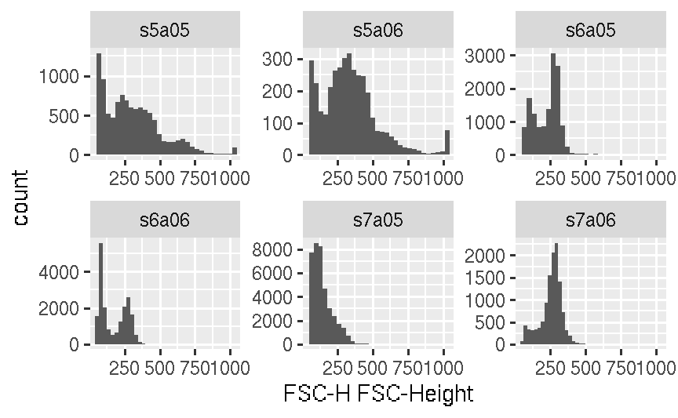
As shown, data is facetted by samples name automatically (i.e facet_wrap(~name)).
We can overwrite the default faceting by any variables that are defined in pData
## Patient Visit Days Grade name
## s5a05 5 5 19 3 s5a05
## s5a06 5 6 26 3 s5a06
## s6a05 6 5 19 3 s6a05
## s6a06 6 6 27 3 s6a06
## s7a05 7 5 21 3 s7a05
## s7a06 7 6 28 3 s7a06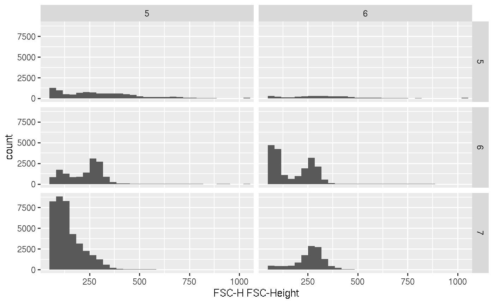
To display 1d density
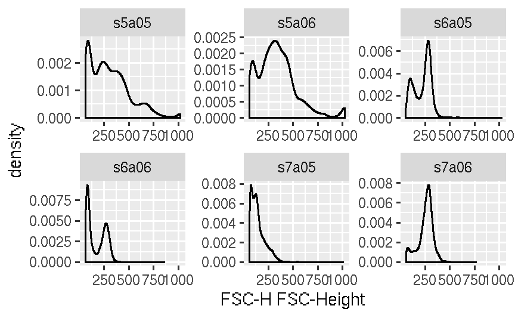
Fill the same color
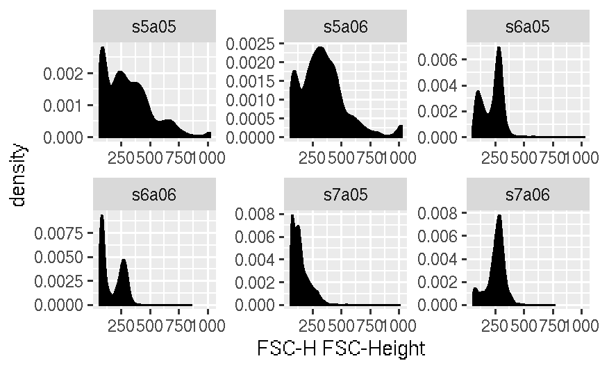
Fill different colors
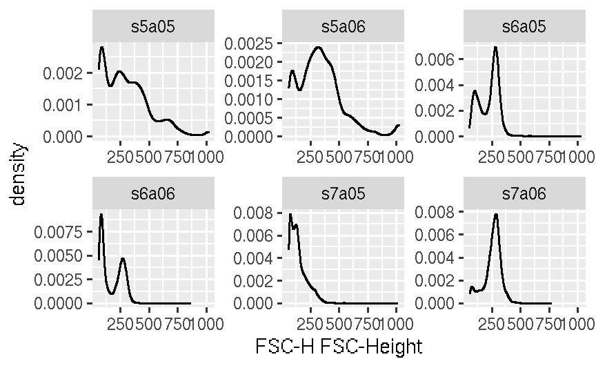
Or plot in the same panel by using ggplot directly (thus removing the default facetting effect)
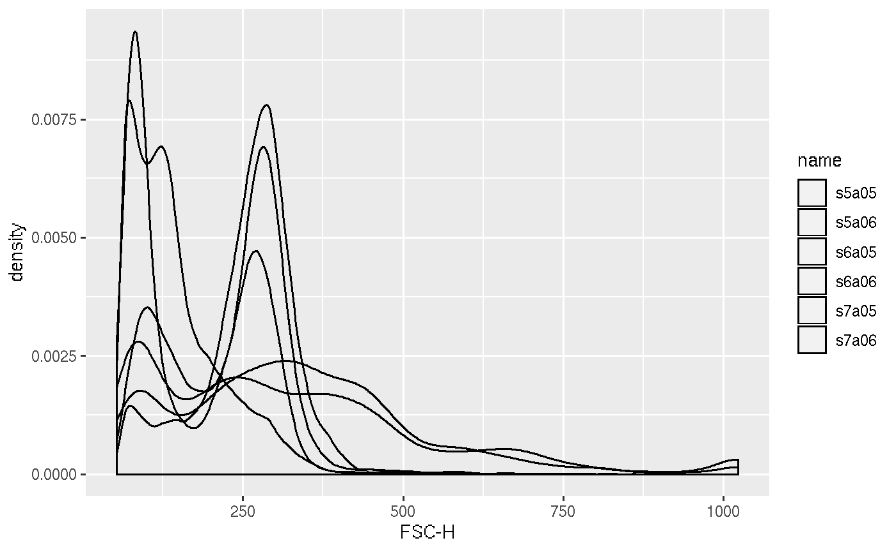
stacked density plot
#you can use ggridges package to display stacked density plot
require(ggridges)
#stack by fcs file ('name')
p + geom_density_ridges(aes(y = name)) + facet_null() #facet_null is used to remove the default facet_wrap (by 'name' column)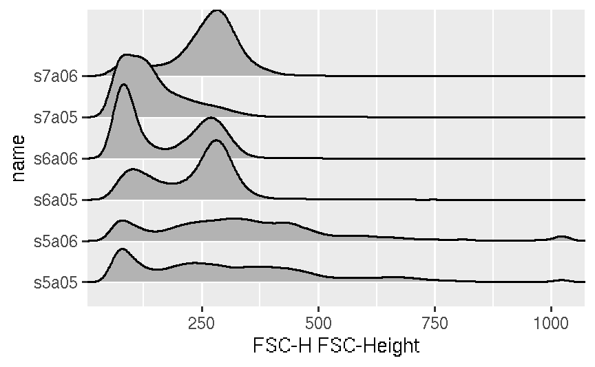
#or to stack by Visit and facet by patient
p + geom_density_ridges(aes(y = Visit)) + facet_grid(~Patient)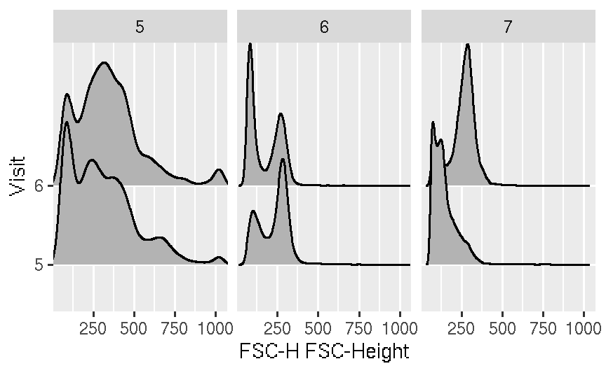
2d scatter/dot plot
A default scale_fill_gradientn is applied to 2d hexbin plot.
To add limits
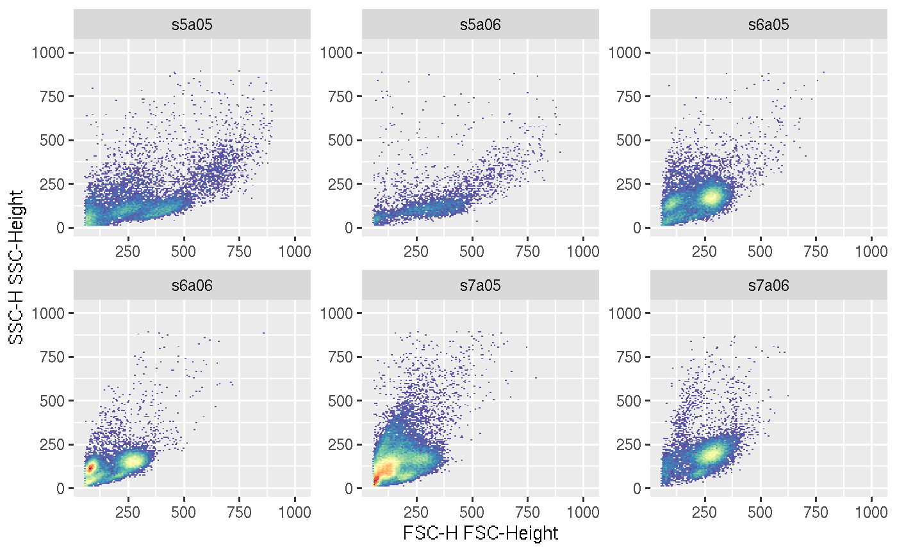
To overwrite the default fill gradien
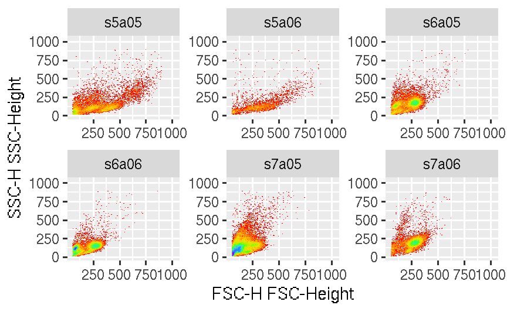
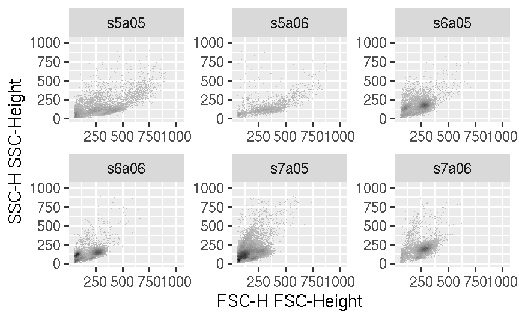
Add geom_gate and geom_stats layers
Firstly we create an ellipsoidGate with a data-driven method provided by flowStats package.
# estimate a lymphGate (which is an ellipsoidGate) for each sample
lg <- flowStats::lymphGate(fs, channels=c("FSC-H", "SSC-H"),scale=0.6)
# apply the ellipsoidGates to their corresponding samples
fres <- filter(fs, lg)Then pass the gates to the gate layer
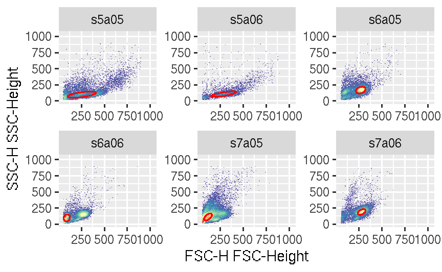
We can also plot the rectangleGate, this time we simply replicate a static gate across samples:
rect.g <- rectangleGate(list("FSC-H" = c(300,500), "SSC-H" = c(50,200)))
rect.gates <- sapply(sampleNames(fs), function(sn)rect.g)Similarly, supply the list of gates to the geom_gate layer
Stats layer can be added on top of gate
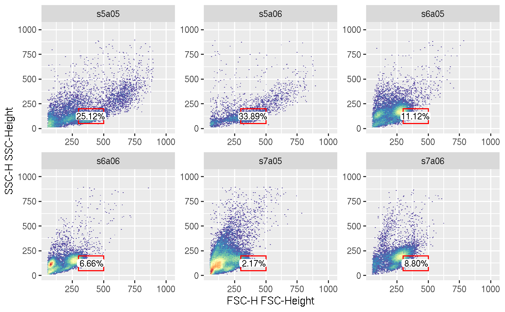
The percentage of the gated population over its parent is displayed as geom_label. Alternatively cell count can be displayed by setting type argument in geom_stats function.
Here is another example of displaying the 1d gate generated by the automated gating method gate_mindensity from openCyto package.
den.gates.x <- fsApply(fs, openCyto::gate_mindensity, channel = "FSC-H", gate_range = c(100, 300), adjust = 1)
p + geom_gate(den.gates.x) + geom_stats()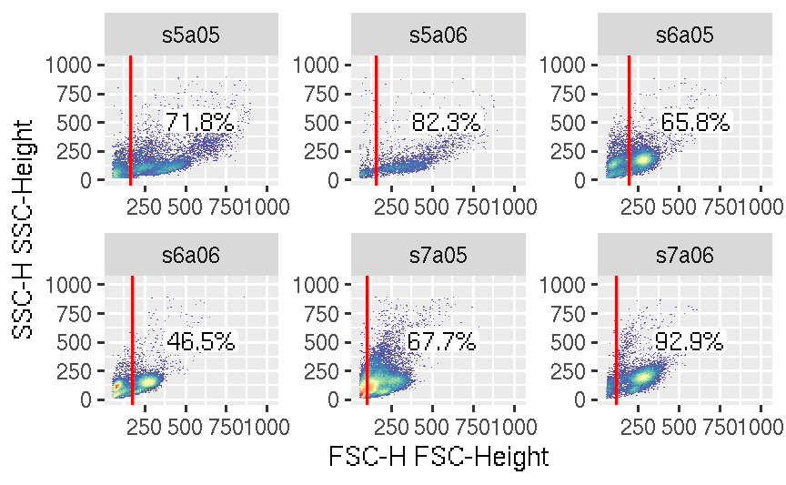
geom_gate layer supports the 1d gate on either dimension, which means it automatically determines between the vertical or horizontal lines based on the gate dimension and given aes.
den.gates.y <- fsApply(fs, openCyto::gate_mindensity, channel = "SSC-H", gate_range = c(100, 500), adjust = 1, positive = FALSE)
p + geom_gate(den.gates.y) + geom_stats(value = lapply(rect.gates, function(g)0.1))
Here we also demenstrated the option of passing the precalculated arbitary stats value to geom_stats lay instead of letting it compute on the fly,
We can also put the 1d gate on density plot
ggcyto(fs, aes(x = `FSC-H`)) + geom_density(fill = "black", aes(y = ..scaled..)) + geom_gate(den.gates.x) + geom_stats(type = "count")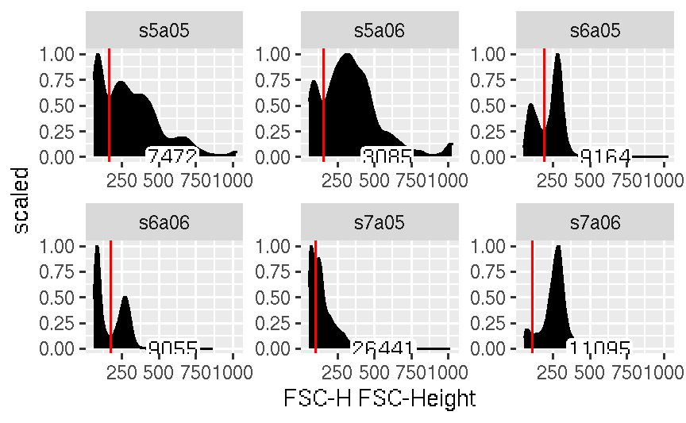
Without supplying data for geom_stats, we add stats layer for all the gate layers implicitly
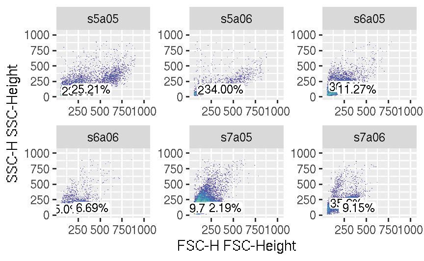
Or we can add stats layer specificly just for one of the gate layer
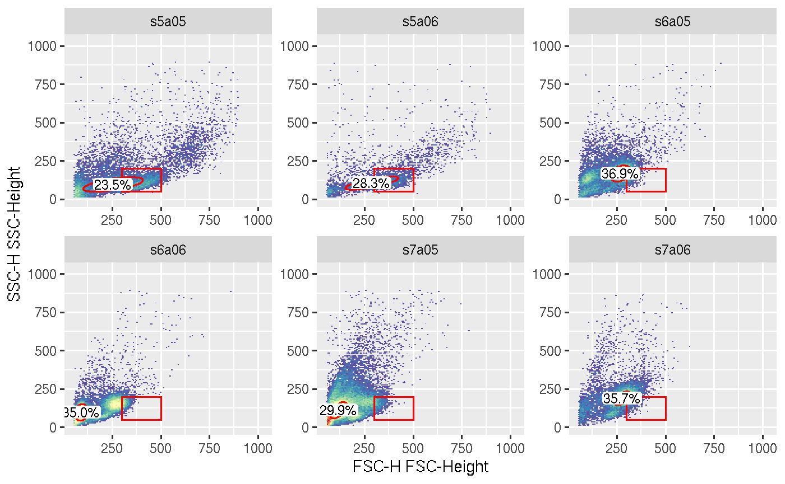
Although ggcyto object is fully ggplot-compatible in terms of adding layers and parameters, its data slot MAY NOT be fully fortified to data.frame before it is printed/plotted.
## [1] "ggcyto_flowSet"
## attr(,"package")
## [1] "ggcyto"## [1] "flowSet"
## attr(,"package")
## [1] "flowCore"To convert it to a pure ggplot object, use as.ggplot function:
## [1] "gg" "ggplot"## [1] "data.table" "data.frame"